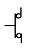
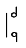
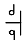
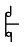

천장크레인운전기능사 (2010-10-03 기출문제)
1과목: 임의 구분
1. 크레인 리미트 스위치의 종류가 아닌 것은?
- 크랭크식
- 스크루식
- 캠식
- 중추식
(정답률: 42%)

2. 천장크레인의 3대 주요 구성장치가 아닌 것은?
- 권상장치
- 횡행장치
- 주행장치
- 신호장치
(정답률: 84%)
3. 천장크레인의 용량은 정격하중과 스팬으로 표기하는 것이 보통이지만 한 가지를 더 추가한다면?
- 양정
- 권상속도
- 횡행속도
- 주행속도
(정답률: 79%)
4. 훅에 대한 설명으로 틀린 것은?
- 훅의 입구가 안쪽 크기와 같게 될 경우 훅을 교환하여야 한다.
- 훅에 로프가 닿는 부분은 마모되므로 상세하게 점검하여야 한다.
- 단면이 급변한 부분은 균열이 발생할 염려가 있으므로 상세하게 점검하여야 한다.
- 장시간 사용하면 재료가 연해질 우려가 있다.
(정답률: 67%)
5. 천장크레인의 완성검사시 시험하중은?
- 정격하중의 100%
- 정격하중의 110%
- 정격하중의 125%
- 정격하중의 150%
(정답률: 81%)
6. 횡행장치의 정의는?
- 크레인 전체를 움직이기 위한 장치이다.
- 크레인에서 짐을 들어 올리거나 내리기 위한 장치이다.
- 센터포스트를 중심으로 선회하기 위한 장치이다
- 하물을 달고 크레인 거더위를 수평방향으로 이동하는 대차를 크래브 또는 트롤리라 하고 이 트롤리를 이동시키는 장치를 횡행 장치라 한다.
(정답률: 78%)
7. 권상장치의 용어 정의는?
- 횡행전동기를 구동시켜 크래브를 가로 방향으로 이동시킨다.
- 주행차륜을 레일 위에서 회전시키는 구조로 되어 있다.
- 크레인에서 화물을 들어 올리거나 내리기 위한 장치를 말한다.
- 제동장치는 주로 스러스트 브레이크를 사용하여 제동한다.
(정답률: 82%)
8. 전자브레이크의 전자석이 소리를 내며 과열, 소손되는 경우 점검 사항과 관계가 없는 것은?
- 압출봉 출입구 패킹부에서 물이 침입하여 내부에 녹이 발생하여 있지 않는 가
- 풀리와 라이닝의 틈새가 너무 적지 않은 가
- 스트로크가 너무 크지 않은 가
- 브레이크 라이닝이 과열하지 않았는가
(정답률: 43%)
9. 와이어로프 직경(d)과 드럼 직경(D)의 비는?
- D/d = 10
- D/d = 15
- D/d = 10 ~ 15
- D/d = 25 ~ 30
(정답률: 33%)
10. 거더의 캠버는 정격하중을 가하였을 때 스팬의 얼마 이하가 적당한가?
- 1/800
- 1/600
- 1/500
- 1/400
(정답률: 74%)
11. 주행 차륜 플랜지는 두께의 몇 %이상 마모와 수직에서 몇 도(°) 이상의 변형이 생기면 교환하는가?
- 40%, 20°
- 40%, 10°
- 50%, 10°
- 50%, 20°
(정답률: 45%)
12. 크레인에서 사용하는 각종 시브의 주요 점검사항이 아닌 것은?
- 시브 홈의 이상마모는 없는 가
- 시브 홈과 와이어로프 지름이 적정한 가
- 시브 홈의 윤활 상태는 적정한 가
- 원활히 회전하고 암이나 보스 등에 규열은 없는 가
(정답률: 59%)
13. 훅(hook)의 안전계수는 최소 얼마 이상이어야 하는가?
- 3 이상
- 7 이상
- 5 이상
- 9 이상
(정답률: 90%)
14. 차륜주행 관련 점검사항이 아닌 것은?
- 베어링의 마모상태
- 차륜의 중심선 일치 여부
- 레일의 굽음
- 차륜의 열 전도율
(정답률: 65%)
15. 압상형 유압브레이크에서 스러스트의 오일교환 주기로 적절 한 것은?
- 500 시간
- 1000 시간
- 2000 시간
- 5000 시간
(정답률: 93%)
16. 천장크레인의 브레이크 정비에 대해서 틀린 것은?
- 브레이크휠과 라이닝 간격은 보통 브레이크휠 직경의 200분의 1정도 비율로 한다.
- 브레이크휠 림의 두께 마모한도는 원치수의 40% 정도이다.
- 브레이크휠 면의 요철이 2㎜ 정도가 되면 평활하게 다듬어 주어야 한다.
- 라이닝의 내열온도는 보통 650℃ 정도이다.
(정답률: 44%)
17. 천장크레인의 크기 표시“40/20ton, Span 28m"에서 Span 28m의 뜻은?
- 주행 차륜 사용 허용 평균 속도이다.
- 주행 차륜 중심 간 거리가 28m 이다.
- 주행 레일의 길이가 28m 이다.
- 횡행 차륜 간의 거리가 28m 이다.
(정답률: 77%)
18. 나사형 권과 장치에 해당되지 않은 사항은?
- 권상드럼의 회전수와 관계가 없다.
- 상하한 전양정에서 작동하므로 정지 정도가 나쁘다.
- 와이어로프를 교환한 경우에는 권과방지 장치를 재조정 하여야 한다.
- 스프로킷을 교환하는 경우에 기어의 치수를 변경시키면 양정 간격을 확보할 수 없다.
(정답률: 29%)
19. 자극 전면에 놓인 금속제 원판이 회전하면 그 회전을 멈추고자 하는 방향으로 제동이 작용하는 성질을 응용한 브레이크는?
- 메카니컬 브레이크
- 와류 브레이크
- 페달 브레이크
- 스러스트 브레이크
(정답률: 56%)
20. 천장크레인 주행용 레일(rail)의 구배 허용 값은?
- 주행길이 2m 당 0.5㎜를 초과하지 않을 것
- 주행길이 2m 당 2㎜를 초과하지 않을 것
- 주행길이 10m 당 1㎜를 초과하지 않을 것
- 주행길이 10m 당 2㎜를 초과하지 않을 것
(정답률: 56%)
2과목: 임의 구분
21. 수동 조작 자동복귀형 b접점 스위치는?




(정답률: 50%)
22. 실제 현장에서 크레인에 가장 많이 사용되고 있는 전압은?
- 110V
- 220V
- 440V
- 550V
(정답률: 84%)
23. 변압기는 어떤 원리를 이용한 전기장치인가?
- 전자 유도작용
- 전류의 화학작용
- 정전 유도작용
- 전류의 발열작용
(정답률: 67%)
24. 주행 중 한쪽 방향으로먄 운동이 계속된다. 응급 처리방법으로 알맞은 것은?
- 비상 S/W를 작동하여 전원을 차단, 크레인을 정지한 다음 조치를 취한다.
- 빠른 동작으로 주행 패널 부분의 전자접촉기의 이상 유무를 점검한다.
- 거더 위에 설치되어 있는 메인 S/W를 내린다음 조치를 취한다.
- 운전실 내부에 잇는 제어 부분의 이상 유무를 확인한다.
(정답률: 80%)
25. 플랜지 축이음의 설명으로 가장 알맞은 것은?
- 축의 지름과 하중이 작으며 저 회전일 때 주로 사용하는 축이음이다.
- 양축의 중심선이 정확하게 일치하지 않을 때 주로 사용하는 축이음이다.
- 기계류의 축이음에 널리 사용되고 있으며 축의 직경이 75㎜이상 이면 더욱 좋다.
- 축이음을 할 때 가죽이나 고무 같은 탄성체를 플랜지 중간에 넣어 연결한다.
(정답률: 47%)
26. 천장크레인의 주기적인 정비를 위한 예비 품녹과 가장 거리가 먼 것은?
- 퓨즈
- 브레이크 라이닝
- 전동기 브러시
- 제어반(판넬)
(정답률: 87%)
27. 천장크레인의 취급에 대한 설명 중 틀린 것은?
- 작업 종료 후 크레인을 소정 위치에 정지시킨다.
- 작업 종료 후 브레이크 와이어 등의 점검을 한다.
- 전기활선 작업을 금하며 안전 커버를 벗긴 채로 운전을 금한다.
- 작업 종료 후 각제어기를 off로 하고 보호판의 스위치는 on으로 하여야 한다.
(정답률: 76%)
28. 천장 크레인의 무부하 운전 내용 중 틀린 것은?
- 정격하중을 훅에 걸고 권상권하, 주행, 횡행 동작이 되는가?
- 각 제동기의 작동 상태는 정상인가?
- 권과 방지 장치는 작동하는가?
- 이상음, 이상발열, 이상진동은 없는가?
(정답률: 52%)
29. 입력 전압이 440V, 60(Hz)인 3상 유도전동기가 있다. 극수가 4극이고 슬립이 3%일 때 회전자 속도는 약 얼마인가?
- 1746rpm
- 1780rpm
- 1800rpm
- 1880rpm
(정답률: 49%)
30. 점검항목 중 연간 점검에 해당하는 것은?
- 주행, 횡행 레일을 측정기 사용 점검
- 훅의 작동상태
- 전기 배선의 누전 및 오염 상태
- 와이어 드럼의 이상 마모 상태
(정답률: 64%)
31. 베어링이 고착되는 경우와 가장 거리가 먼 것은?
- 급유가 불충분한 경우
- 급유 오일의 선정이 잘못된 경우
- 과부하로 베어링의 유막이 파괴된 경우
- 저속으로 회전하는 경우
(정답률: 69%)
32. 크레인을 보수 관리하는데 중요한 부분장치로 예방보번이 가장 필요한 장치는?
- 주행 장치
- 횡행 장치
- 권상 장치
- 크래브 장치
(정답률: 68%)
33. 트롤리(Trolley)동선의 좌, 우 고저차는 기준면에서 몇 ㎜ 이하를 유지하여야 하는가?
- ± 2㎜
- ± 4㎜
- ± 6㎜
- ± 8㎜
(정답률: 73%)
34. 다음 중 틀린 것은?
- 저항기는 사용 중 온도가 높아져서 약 350℃가 될 때가 있으므로 통풍을 잘 시켜야 된다.
- 리미트 스위치를 구조별로 구분하면 나사형, 레버형, 캠형으로 나눌 수 있다.
- 리미트스위치의 작용점이 최대 부하 때와 무부하 때에는 약간 씩 차이가 난다.
- 천장크레인용 저항기는 용량이 크고 진동에 강한 리본형이 적합하다.
(정답률: 47%)
35. 주행운전 방법으로 틀린 것은?
- 주행 시작시 필히 경보를 울려야 한다.
- 진행 중인 방향에 위험물의 유무를 확인하며 주행한다.
- 급격한 주행으로 인해 달려있는 짐이 흔들리지 않도록 운전해야 한다.
- 정지위치에 도달할 때가지 주행을 작동시켰다가 브레이크를 사용 정지한다.
(정답률: 82%)
36. 기어와 축과의 관계를 연결한 것 중 틀린 것은?
- 두 축의 교차 - 베벨기어
- 두 축의 평행 - 스퍼기어
- 직각 교차 하는 기어 - 웜과 웜기어
- 두 축이 교차 -하이포드기어
(정답률: 46%)
37. 동력 전달용 나사 종류 중, 사다리꼴나사의 특징이 아닌 것은?
- 사각나사보다 제작이 쉽고 정밀도가 높다.
- 나사산의 각도는 미터계(TM, 30°)와 피트계(TM, 29°)가 있다.
- 마모에 의한 조정이 쉽다.
- 강도가 크고 동력전달이 정확하다.
(정답률: 38%)
38. 천장크레인에서 오일이 묻어서는 안 되는 곳은?
- 브레이크 라이닝 및 브레이크 휠
- 와이어로프와 드럼
- 기어와 기어박스
- 시브와 시브 축
(정답률: 59%)
39. 키(Key)에 대한 설명 중 틀린 것은?
- 구배키(Taper Key)는 1/100정도 기울기를 준 것이다.
- 키에는 수시로 급유하여 녹을 방지해야 한다.
- 키는 회전력을 전달하는데 사용된다.
- 키는 회전체를 축에 고정 시키는데 사용된다.
(정답률: 54%)
40. 고정자 및 회전자의 양쪽에 권선을 지니고 있으며 회전자의 권선에 슬립링을 통해서 외부 저항을 증감하면 부하를 걸었을 때 속도를 가감할 수 있고, 특히 크레인의 기동 시에 기계에 충격을 주지 않고 서서히 가속할 수 있는 전동기는?
- 권성형 유도 전동기
- 농형 유도 전동기
- 직류 분권 전동기
- 직류 직권 전동기
(정답률: 65%)
3과목: 임의 구분
41. 줄걸이 방법의 설명 중 틀린 것은?
- 눈걸이 : 모든 줄걸이 작업은 눈걸이를 원칙으로 한다.
- 반걸이 : 미끄러지기 쉬우므로 엄금한다.
- 짝감기 걸이 : 가는 와이어로프일 때 사용하는 줄걸이 방법이다.
- 어깨걸이 나머지 돌림 : 2가닥 걸이로서 꺾어 돌림을 할수 없을 때 사용하는 줄걸이 방법이다.
(정답률: 56%)
42. 정격하중 100톤의 크레인을 제작한다면 6×24직경이 20㎜인 와이어로프를 몇 가닥으로 해야 하는가? (단, 와이어로프 절단하중 20톤, 안전계수는 5로 한다.)
- 5가닥
- 10가닥
- 20가닥
- 26가닥
(정답률: 40%)
43. 기계 설치용 크레인에서 권상용 와이어로프를 8줄 걸이로 6호(6×37), 20㎜ 직경, B종을 사용할 때 최대 권상 가능한 하중은 약 얼마인가?(단, 로프의 전단하중은 23톤, 안전율은 5일 경우)
- 14톤
- 37톤
- 42톤
- 48톤
(정답률: 63%)
44. 와이어로프(Wire rope)의 소선에 대하여 설명한 것이다. 맞는 것은?
- 스트랜드를 구성하고 있는 소선의 결합에는 점(点), 선(線), 면(面), 정(井) 접촉 구조의 4가지가 있다.
- 소선의 역할은 충격하중의 흡수, 부식방지, 소선끼리의 마찰에 의한 마모방지, 스트랜드(strand)의 위치를 올바르게 하는데 있다.
- 와이어로프의 소선은 KSD 3514에 규정된 탄소강에 특수 열처리를 하여 사용하며 인장강도는 135~180kgf/mm2 이다.
- 소선의 재질은 탄소강 단강품(KSD 3710)이나 기계구조용 탄소강(KSD 3517)이며 강도와 연성(延性)이 큰 것이 바람직하다.
(정답률: 67%)
45. 신호수가 양쪽 손을 몸 앞에다 대고 두 손을 깍지끼는 신호를 보내고 있다. 이는 무슨 신오인가?
- 물건걸이
- 비상정비
- 뒤집기
- 수평이동
(정답률: 80%)
46. 힘의 모멘트가 M = P × L일 때 P와 L은?
- P = 힘, L = 길이
- P = 길이, L = 면적
- P = 무게, L = 체적
- P = 부피, L = 넓이
(정답률: 50%)
47. 줄걸이 와이어의 클립 고정법에서 클립을 사용하여 고정할때 와이어의 절단 하중은 몇 % 감소되는가?
- 15% ~ 20%
- 20% ~ 25%
- 30% ~ 35%
- 80% ~ 85%
(정답률: 40%)
48. 크레인의 와이어로프 대한 설명으로 틀린 것은?
- 도르래 플랜지의 사용 중 접촉에 의해 마모 및 부식이 발생하여 수명이 떨어진다.
- 소선수의 10% 이상이 절단된 것은 사용해서는 안 된다.
- 직경의 감소가 공칭직경의 15%를 초과할 때 까지는 사용할 수 있다.
- 킹크가 심하게 된 때는 교체하여 사용한다.
(정답률: 83%)
49. 와이어로프 작업자가 줄걸이 작업을 실시할 때 짐의 중량에 따른 안전작업 방법이 아닌 것은?
- 짐의 중량을 어림짐작하여 작업한다.
- 정격 하중을 넘는 무게의 짐을 매달지 않는다.
- 상례적으로 정해진 짐의 전문적인 줄걸이 용구를 만들어 작업한다.
- 짐의 중량 판단에 자신이 없을 때는 상급자에게 문의하여 작업한다.
(정답률: 94%)
50. 매다는 체인에 균열이 발생한 경우 용접하여 사용 할 수 있는가?
- 사용할 수 있다.
- 사용하여서는 안 된다.
- 체인의 여유가 없는 불가피한 경우 1회에 한하여 용접하여 사용할 수도 있다.
- 일반적으로 미소한 균열일 경우 용접 사용이 가능하다.
(정답률: 65%)
51. 다음 중 금속나트륨이나 금속칼륨 화재의 소화재로서 가장 적합한 것은?
- 물
- 건조사
- 분말 소화기
- 할론 소화기
(정답률: 57%)
52. 아세틸렌 용접장치를 사용하여 용접 또는 절단할 때에는 아세틸렌 발생기로부터 ( ) 이내, 발생기실로부터 ( )이내의 장소에서는 흡연 등의 불꽃이 발생하는 행위를 금지하여야 한다. ( )안에 차례로 들어갈 거리는?
- 3m, 1m
- 5m, 3m
- 8m, 4m
- 10m, 5m
(정답률: 50%)
53. 안전관리상 수공구와 관련한 내용으로 가정 적합하지 않은 것은?
- 공구를 사요한 후 녹슬지 않도록 반드시 오일을 바른다.
- 작업에 적합한 수공구를 이용한다.
- 공구는 목적 이외의 용도로 사용하지 않는다.
- 사용 전에 이상 유무를 반드시 확인한다.
(정답률: 84%)
54. 동력 전동장치에서 가장 재해가 많이 발생할 수 있는 것은?
- 기어
- 커플링
- 벨트
- 차축
(정답률: 71%)
55. 안전 관리의 가장 중요한 업무는?
- 사고책임자의 직무조사
- 사고원인 제공자의 파악
- 사고발생 가능성의 제거
- 물품손상의 손해사정
(정답률: 87%)
56. 무거운 짐을 이동할 때 적당하지 않은 것은?
- 힘겨우면 기계를 이용한다.
- 기름이 묻은 장갑을 끼고 한다.
- 지렛대를 이용한다.
- 2인 이상이 작업할 때는 힘센 사람과 약한 사람과의 균형을 잡는다.
(정답률: 98%)
57. 스패너 작업 방법으로 옳은 것은?
- 몸 쪽으로 당길 때 힘이 걸리도록 한다.
- 볼트 머리보다 큰 스패너를 사용하도록 한다.
- 스패너 자루에 조합렌치를 연결해서 사용하여도 된다.
- 스패너 자류에 파이프를 끼워서 사용한다.
(정답률: 70%)
58. 안전, 보건표지의 종류와 형태에서 그림의 안전표지판이 나타내는 것은?
- 보행금지
- 작업금지
- 출입금지
- 사용금지
(정답률: 77%)
59. 방화 대책의 구비사항으로 가장 거리가 먼 것은?
- 소화기구
- 스위치 표시
- 출입금지
- 방화사
(정답률: 39%)
60. ILO(국제노동기구)의 구분에 의한 근로 불능 상해의 종류 중 응급조치 상해는?
- 1일 미만의 치료를 받고 다음부터 정상작업에 임할 수 있는 정도의 상해
- 2~3일의 치료를 받고 다음부터 정상작업에 임할 수 있는 정도의 상해
- 1주 미만의 치료를 받고 다음부터 정상작업에 임할 수 있는 정도의 상해
- 2주 미만의 치료를 받고 다음부터 정상작업에 임할 수 있는 정도의 상채
(정답률: 60%)